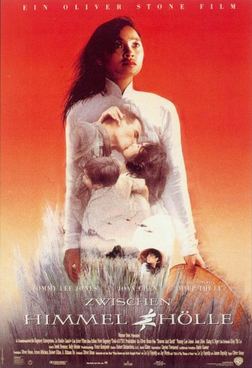

#4639 Zwischen Himmel und Hölle
Auszeichnungen: 1 GoldenGlobes gewonnen
 
 IMDB-Wertung: 6.8 / 10
IMDB-Wertung: 6.8 / 10  Metascore: 0
Metascore: 0 
Vietnam 1965: Le Ly ist zwölf Jahre alt, als US-Soldaten in ihr Dorf einmarschieren. Weil sie mit den Kommunisten sympathisiert, wird sie von den südvietnamesischen Militärs gefoltert. Zwar gelingt es ihrer Mutter, sie freizukaufen, dafür wird Le Ly vom Vietcong des Verrats bezichtet. Die junge Frau flieht nach Saigon und läßt sich auf ein Verhältnis mit ihrem Arbeitgeber ein. Nach der Geburt ihres Sohnes schlägt sich die Verzweifelte in Da Nang als Prostituierte durch. Als ihr Steve Butler den Hof macht, heiratet Le Ly den US-Sergeant und folgt ihm nach Amerika. Aber auch dort läßt sich die Vergangenheit nicht abschütteln. Das Kriegstrauma ihres Mannes vergiftet die gemeinsame Zukunft...
Jahr: 1993
Dauer: 141 Minuten
FSK: 16
Land: Frankreich Studio: Warner Home VideoTonspuren: DD2.0 - ,
Untertitel:
Auflösung: 1080p (1920x800) Größe: 11366 MB
Genre: Action, Biographie, Drama, Geschichte, Krieg
Regisseur:
Drehbuch: Brad Desch
Soundtrack:
Darsteller:
- Haing S. Ngor als Papa
 Joan Chen als Mama
Joan Chen als Mama Hiep Thi Le als Le Ly
Hiep Thi Le als Le Ly Dustin Nguyen als Sau
Dustin Nguyen als Sau- Mai Le Ho als Hai
- Liem Whatley als Viet Cong Captain
 Michael Paul Chan als Interrogator
Michael Paul Chan als Interrogator- Irene Ng als Torture Girl #1
 Vivian Wu als Madame Lien
Vivian Wu als Madame Lien- Long Nguyen als Anh
- Stephen Polk als G.I. #1
 Robert John Burke als G.I. Paul
Robert John Burke als G.I. Paul Tim Guinee als Young Sergeant
Tim Guinee als Young Sergeant Timothy Carhart als Big Mike
Timothy Carhart als Big Mike Tommy Lee Jones als Steve Butler
Tommy Lee Jones als Steve Butler Dale Dye als Larry
Dale Dye als Larry Conchata Ferrell als Bernice
Conchata Ferrell als Bernice Debbie Reynolds als Eugenia
Debbie Reynolds als Eugenia Annie McEnroe als Dinner Guest #1
Annie McEnroe als Dinner Guest #1 Marianne Muellerleile als Dinner Guest #2
Marianne Muellerleile als Dinner Guest #2 Marshall Bell als Dinner Guest #3
Marshall Bell als Dinner Guest #3- Melinda Renna als Police Woman
- Tai Thai als Jimmy - Age 20
- Noël John Howard als Alan - Age 2 , uncredited
 Jeffrey Jones als Minister , uncredited
Jeffrey Jones als Minister , uncredited Espérance Pham Thai Lan als Student , uncredited
Espérance Pham Thai Lan als Student , uncredited- Kathlyne Pham als Ghost Wife , uncredited
- Bussaro Sanruck als Le Ly - Age 5
- Supak Pititam als Buddhist Monk
- Thuan K. Nguyen als Uncle Luc
- Lan Nguyen Calderon als Ba
- Thuan Le als Kim
- Vinh Dang als Bon
- Khiem Thai als Brother In Law
- Michelle Vynh Le als Viet Cong Cadre Woman
- Tuan Tran als Rapist
- Aron Starrat als Helicopter Soldier
- Peter Duong als Republican Colonel
- Hieu Van Vu als Teacher
- Phil Neilson als Marine in Helicopter
- Ming-yang Li als Ky La Wizard
- Thanh Vo als Grenade Girl
- George Roarke als U.S. Advisor
- Dave Cooper als Bald Onlooker
- Thuc-Hanh Tran als Torture Girl #2
- Vu Anh Phan als Snakeman
- Mai Le als Steward
- Term Saefam als Herbalist
- Keith Smith als G.I. #2
- Brad Rea als G.I. #3
Datei: X:\1993\Zwischen Himmel und Hölle (1993, FSK16, 1920x800).mkv seit 26.10.2016
Festplatte: HD 1992-1995
 Es gibt insgesamt 68 Filme in der Gruppe '1993'
Es gibt insgesamt 68 Filme in der Gruppe '1993'